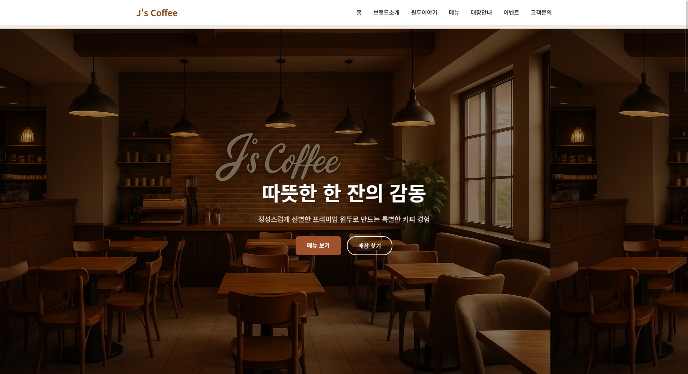

J's Coffee - 프리미엄 커피 브랜드
"따뜻한 한 잔의 감동"을 전하는 프리미엄 커피 브랜드 웹사이트
프로젝트 개요
J's Coffee는 정성스럽게 선별한 프리미엄 원두로 특별한 커피 경험을 제공하는
커피 브랜드 공식 웹사이트입니다.
브랜드 소개부터 메뉴, 매장 안내, 이벤트 정보까지 고객에게 필요한 모든 정보를
직관적이고 세련된 디자인으로 제공합니다.
주요 기능
- 브랜드 소개 : J's Coffee만의 특별함과 가치 전달
- 원두 이야기 : 에티오피아, 콜롬비아 프리미엄 원두 소개
- 메뉴 소개 : 시그니처 아메리카노, 바닐라 라떼 등 인기 메뉴
- 매장 안내 : 강남점, 홍대점 등 전국 매장 위치 및 운영정보
- 이벤트 & 소식 : 신메뉴 출시 및 프로모션 정보
- 뉴스레터 구독 : 고객 대상 소식 전달 서비스
디자인 특징
- 모던 미니멀 디자인 : 깔끔하고 세련된 레이아웃
- 따뜻한 컬러 팔레트 : 커피의 따뜻함을 느낄 수 있는 색상 조합
- 반응형 웹 디자인 : 모바일, 태블릿, 데스크톱 최적화
- 사용자 친화적 내비게이션 : 직관적인 메뉴 구조
- 고품질 이미지 : 커피와 매장 분위기를 전달하는 비주얼
사용 기술
HTML5
CSS3
JavaScript
Responsive Design
Modern UI/UX
- 프론트엔드 : 시맨틱 HTML5, CSS3 Grid/Flexbox
- 상호작용 : 바닐라 JavaScript로 동적 기능 구현
- 반응형 : 미디어 쿼리 기반 모바일 퍼스트 접근
- 최적화 : 이미지 압축 및 로딩 성능 최적화
구현 과정
- 브랜드 아이덴티티 분석 및 디자인 컨셉 수립
- 와이어프레임 제작 및 정보 구조 설계
- 컴포넌트 단위의 CSS 스타일링 구현
- 반응형 레이아웃 및 모바일 최적화
- 사용자 경험 테스트 및 개선사항 반영
프로젝트 성과
- 브랜드 가치를 효과적으로 전달하는 직관적인 웹사이트 완성
- 모든 디바이스에서 일관된 사용자 경험 제공
- 매장 정보와 메뉴를 명확하게 안내하여 고객 편의성 향상
- 모던하고 세련된 디자인으로 브랜드 이미지 강화